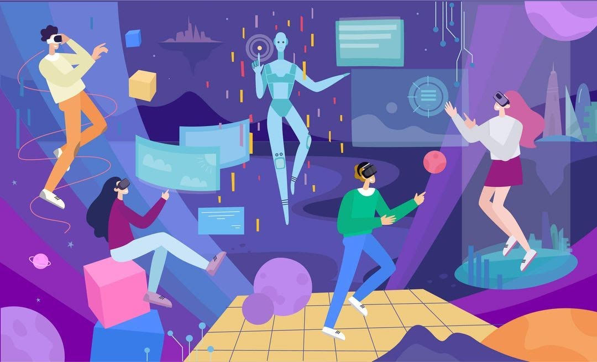

Social media platforms can offer children valuable opportunities to develop digital literacy skills and build a good digital footprint. See what other benefits it offers to help them get the best out of social media.For children who may have a disability or may not feel they can connect with others within their community, it can be a great way to connect with other people who share their ideas and interests.
Social media plays a critical role in connecting teens to new friends, allowing teens to learn more about new friends and get to know them better.
It can open up opportunities to offer support to friends and family that may be experiencing a particular issue. On the flip side for some young people, it can be a place where they can seek support if they are going through something that they cannot talk to those close to them about.
Social media can help young people raise awareness of a particular cause that they are interested in to have a real-world impact on affecting change where they want to see it.
Young people can also use their accounts as bespoke CVs to share their achievements,. showcase their talents and build a positive online portfolio that can benefit them in later life.